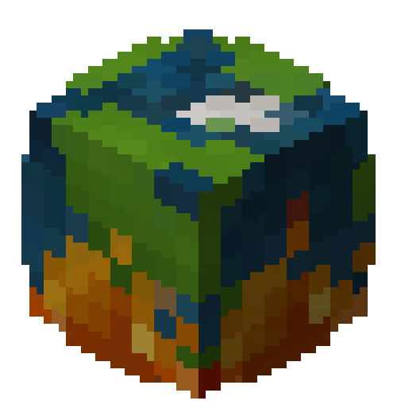

<!-- Image and text -->
<nav class="navbar navbar-light bg-light navbar-expand-lg" class="navbar">
    <a class="navbar-brand" href="index.html">
        
        Ourcraft
    </a>
    <button class="navbar-toggler" type="button" data-toggle="collapse" data-target="#navbarNav"
        aria-controls="navbarNav" aria-expanded="false" aria-label="Toggle navigation">
        <span class="navbar-toggler-icon"></span>
    </button>
    <div class="collapse navbar-collapse" id="navbarNav">
        <ul class="navbar-nav">
            <li class="nav-item active">
                <a class="nav-link" href="index.html">
                    
                    Inicio
                </a>
            </li>
            <li class="nav-item">
                <a class="nav-link" href="races.html">
                    
                    Razas</a>
            </li>
            <li class="nav-item">
                <a class="nav-link" href="craftings.html">Crafteos</a>
            </li>
            <li class="nav-item">
                <a class="nav-link" href="mechanics.html">Mecánicas</a>
            </li>
            <li class="nav-item">
                <a class="nav-link" href="quests.html">Misiones</a>
            </li>
        </ul>
    </div>
</nav>
<br>
<br>
<br>